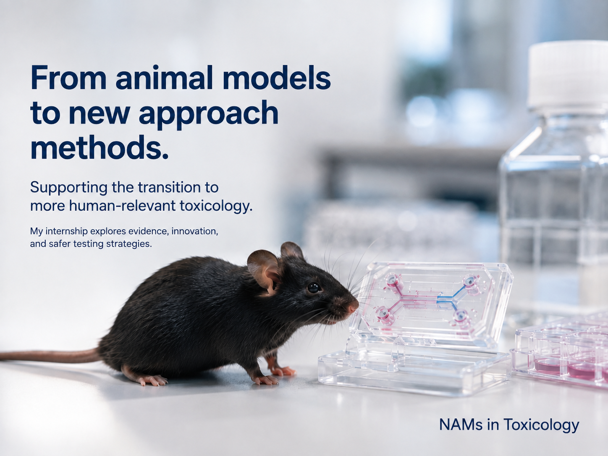

From scientific promise to regulatory use
New Approach Methodologies (NAMs) are transforming toxicological safety assessment. They include in vitro, in chemico, in silico, ex vivo and integrated approaches that can provide information about chemical hazards and risks while reducing or replacing reliance on traditional animal testing.
Developing a scientifically promising method, however, does not automatically lead to its use in regulatory decision-making. Methods may need to pass through several stages of validation, standardisation, independent review and regulatory evaluation, and progress can differ substantially between toxicological endpoints and types of NAMs.
This research project investigates these pathways.

From established animal models to new approaches
NAMs can provide mechanistic and human-relevant evidence while helping to reduce reliance on traditional animal testing. This project examines how that scientific promise translates into regulatory pathways.
Validation pathways and regulatory outcomes
This project examines the validation pathways and regulatory outcomes of New Approach Methodologies using data from the European Commission Joint Research Centre's Tracking System for Alternative Methods towards Regulatory Acceptance (TSAR).
TSAR contains information on alternative test methods that have entered formal validation and regulatory consideration processes. By systematically analysing these records, this project aims to understand not only which NAMs are being developed, but also how far they have progressed towards regulatory acceptance and what may influence that progression.
The research forms part of a Master's thesis in Health & Environment – Toxicology at Utrecht University.
From scientific development to regulatory use
A NAM may be scientifically innovative without yet being ready for regulatory application.
Progress towards regulatory use can depend on many factors, including:
- the type of method
- the toxicological endpoint being addressed
- the availability of a clear and reproducible protocol
- the quality and extent of validation evidence
- the intended context of use
- independent scientific review
- involvement of relevant stakeholders
- standardisation and international harmonisation
- regulatory requirements and acceptance processes
The project therefore distinguishes between method development, validation, regulatory acceptance and implementation rather than treating them as a single process.
What does this project investigate?
How do TSAR-listed NAMs and related alternative test methods differ in their validation characteristics and regulatory outcomes across method types and toxicological endpoints?
Five areas of inquiry
These questions guide the descriptive analyses, comparison of method categories and the selected endpoint case study.
Distribution of methods
How are TSAR-listed NAMs and related alternative test methods distributed across methodological domains, toxicological endpoints, validation stages and regulatory statuses?
Evidence and progression
What types of scientific and regulatory evidence are associated with methods that have progressed towards regulatory acceptance?
Barriers to acceptance
Which scientific, technical and regulatory barriers are reported for methods that have not achieved regulatory acceptance or remain under validation or review?
Differences by method category
How do validation pathways and regulatory outcomes differ between in vitro, in silico, in chemico, ex vivo and integrated approaches?
Selected endpoint case study
What does the selected case-study endpoint reveal about stakeholder involvement, evidence requirements and bottlenecks from validation to regulatory acceptance?
Investigate the TSAR-listed methods
This dashboard makes the project database easier to explore across six connected dimensions.
Method type
Explore in vitro, in silico, in chemico, ex vivo and integrated approaches.
Toxicological endpoint
Compare areas such as eye irritation, skin irritation, sensitisation and more complex systemic toxicity endpoints.
Validation pathway
See where methods are positioned within the validation and assessment process.
Regulatory status
Explore differences in regulatory progression and outcomes between methods.
Workflow stage
Follow methods across the different stages recorded within TSAR.
Stakeholders and organisations
Explore the organisations and actors involved in method submission, validation, review and regulatory consideration.
Why the transition matters
Regulatory acceptance determines whether innovative evidence can support real safety decisions. Understanding where methods progress—or stall—helps reveal where validation, guidance and coordination may be needed.
Why does regulatory acceptance matter?
NAMs have the potential to make toxicological assessment more human-relevant, mechanistically informative, efficient and less dependent on animal testing.
Their impact ultimately depends on whether scientifically useful methods can be translated into approaches that regulators can confidently use for specific decisions.
Understanding why some methods progress further than others can help identify where additional evidence, validation, standardisation, coordination or regulatory guidance may be needed.
By making these patterns visible, this project aims to contribute to a clearer understanding of the transition from scientific innovation to regulatory application.
Tracking System for Alternative Methods towards Regulatory Acceptance
TSAR is maintained by the European Commission's Joint Research Centre. It provides structured information about alternative methods that have entered formal validation and regulatory consideration pathways, including their endpoints, method characteristics, workflow stages and regulatory progress.
This project uses TSAR as the core data source and combines its structured records with researcher verification and supporting scientific and regulatory literature to investigate broader patterns in NAM validation and regulatory acceptance.